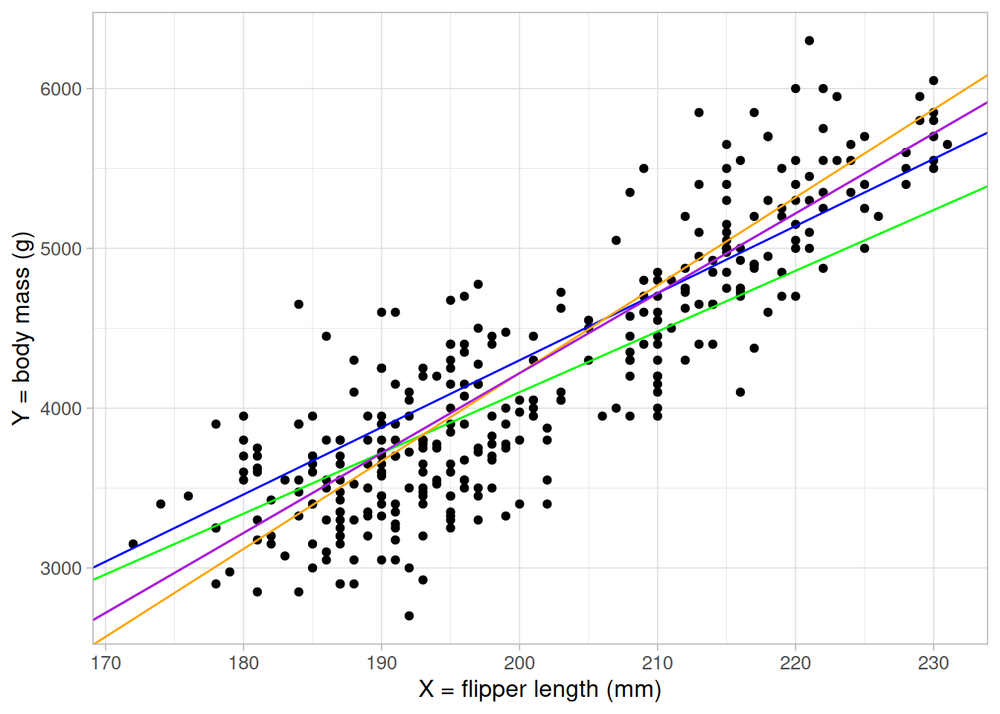
3 Linear regression
Linear regression aims to explain the relationship between a single continuous outcome variable and one (or more) explanatory variable(s).
It does this by fitting a line (or plane) that best models the relationship between the outcome variable and the explanatory variables.
\[ Y = \beta_0 + \beta_1X_1 + \beta_2X_2 + \dots + \beta_kX_k + \epsilon \tag{3.1}\]
In this equation, \(Y\) is the outcome being modelled, \(X_i\) are explanatory variables, and \(\beta_i\) are known as regression coefficients. \(\epsilon\) is the error term and accounts for the difference between our observed values of the outcome variable and our model.
Note
As with many other areas of statistics, you may hear some of the elements of a regression model referred to by different names. These all have the same meanings and can be used interchangeably.
The outcome variable may also be referred to as the dependent or response variable.
Explanatory variables are also known as independent or predictor variables, or covariates.
3.1 Simple linear regression
Simple linear regression refers to a model with a single continuous outcome and a single explanatory variable. The regression model will assume the relationship between the outcome \(Y\) and explanatory variable \(X\):
\[ Y = \beta_0 + \beta_1X_1 + \epsilon \tag{3.2}\]
The regression model that we will fit takes the form:
\[ \hat{y_i} = \beta_0 + \beta_1x_i \tag{3.3}\]
This represents the equation of a straight line, where \(\beta_0\) is the intercept and \(\beta_1\) is the gradient. The results of this linear regression model will provide the equation of the line of best fit.
We can imagine many straight lines through our data. How do we know which one best models the relationship?
Linear regression works by measuring the distance between each point and its ‘predicted’ value on the line of best fit. This distance is known as a residual. If we square this distance for each record and sum them all up, we get the sum of squared residuals. The choice of \(\beta_0\) and \(\beta_1\) that gives us a line that minimizes the sum of squared residuals is our ‘best’ fitting line. The full mathematical derivation of this is in the appendix however we don’t need to do this by hand. In the next section we will use R to calculate the optimal values of \(\beta_0\) and \(\beta_1\).
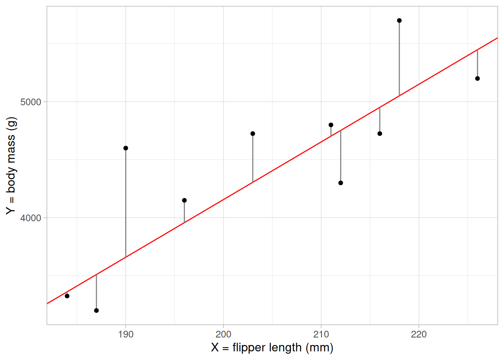
3.2 Fitting a simple linear regression in R
To fit a simple linear regression to our data in R, we use the lm() function and return the model results using summary().
The lm() function takes the form of a formula lm(response ~ explantory)
lm_flipper <- lm(body_mass_g ~ flipper_length_mm, data = penguins)
summary(lm_flipper)- 1
- First, we define the regression model equation.
- 2
- Summary provides model output, including coefficient estimates, p-values, and other model summaries.
Call:
lm(formula = body_mass_g ~ flipper_length_mm, data = penguins)
Residuals:
Min 1Q Median 3Q Max
-1058.80 -259.27 -26.88 247.33 1288.69
Coefficients:
Estimate Std. Error t value Pr(>|t|)
(Intercept) -5780.831 305.815 -18.90 <2e-16 ***
flipper_length_mm 49.686 1.518 32.72 <2e-16 ***
---
Signif. codes: 0 '***' 0.001 '**' 0.01 '*' 0.05 '.' 0.1 ' ' 1
Residual standard error: 394.3 on 340 degrees of freedom
(2 observations deleted due to missingness)
Multiple R-squared: 0.759, Adjusted R-squared: 0.7583
F-statistic: 1071 on 1 and 340 DF, p-value: < 2.2e-16There is a lot of information given here, a quick summary of the important points (for now) are:
(Intercept): this returns the estimate of \(\beta_0\) from Equation 3.3, the expected value of the outcome where all covariates are 0. Often, the intercept value will not have a meaningful interpretation. For example, here it tells us the expected body mass of penguins with flipper length 0mm is [-5780.83g]flipper_length_mm: this returns the estimate of \(\beta_1\) from Equation 3.3, the gradient. This can interpreted as the expected change in the outcome for every unit increase of the associated covariate. In this example, penguins’ body mass is expected to be 49.69g higher for every millimeter longer their flippers were.Pr(>|t|): the p-value associated with each coefficient estimate, testing the null hypothesis of no association (\(\beta_i = 0\)). In this model, the p-value associated with \(\beta_1\) is so small that it cannot be written in its entirety. Therefore we can state that there was a statistically significant association between flipper length and body mass.
Note
<2e-16 is scientific notation for < 0.0000000000000002.
Multiple R-squared: the \(R^2\) value represents the proportion of variance in the outcome variable explained by the model. In this case, the proportion is 0.759 or, if we convert it into a percentage, (0.759 \(\times\) 100 =) 75.9% of the variation in body mass has been explained by flipper length. Thep-valueunder this estimate relates to the R-squared value and tests the null hypothesis that R-squared = 0 (i.e. the model does not explain any of the outcome). In this case, the p-value is too small to be printed (given as<2e-16), indicating the model explains a significant amount of the variation in body mass.
Note
Where there is a single continuous explanatory variable, the \(R^2\) value is the Pearson correlation squared. If we take the square root of this value, it will give us the same as the correlation value estimated earlier:
r_sq <- summary(lm_flipper)$r.squared
cor(penguins$body_mass_g, penguins$flipper_length_mm,
use = "complete.obs")[1] 0.8712018sqrt(r_sq)[1] 0.8712018Using the model output gives us the equation of the line of best fit:
\[ body mass = -5780.83 + 49.69 \times flipper length \]
As the linear equation assumes an additive relationship between the outcome and covariate, we can use this to make estimates about differences in the outcome based on the difference in covariate. For example, if there were two penguins and one had flippers that were 1cm (10mm) longer, we would expect their body mass to be (49.69 \(\times\) 10 =) 496.9 heavier.
This line can be added to the scatterplot to visualise the results:
ggplot(data = penguins) +
geom_point(aes(x = flipper_length_mm, y = body_mass_g)) +
geom_abline(intercept = coefficients(lm_flipper)[1],
slope = coefficients(lm_flipper)[2],
colour = "red", linewidth = 2) +
labs(x = "flipper length (mm)", y = "body mass (g)") +
theme_light(base_size = 12)
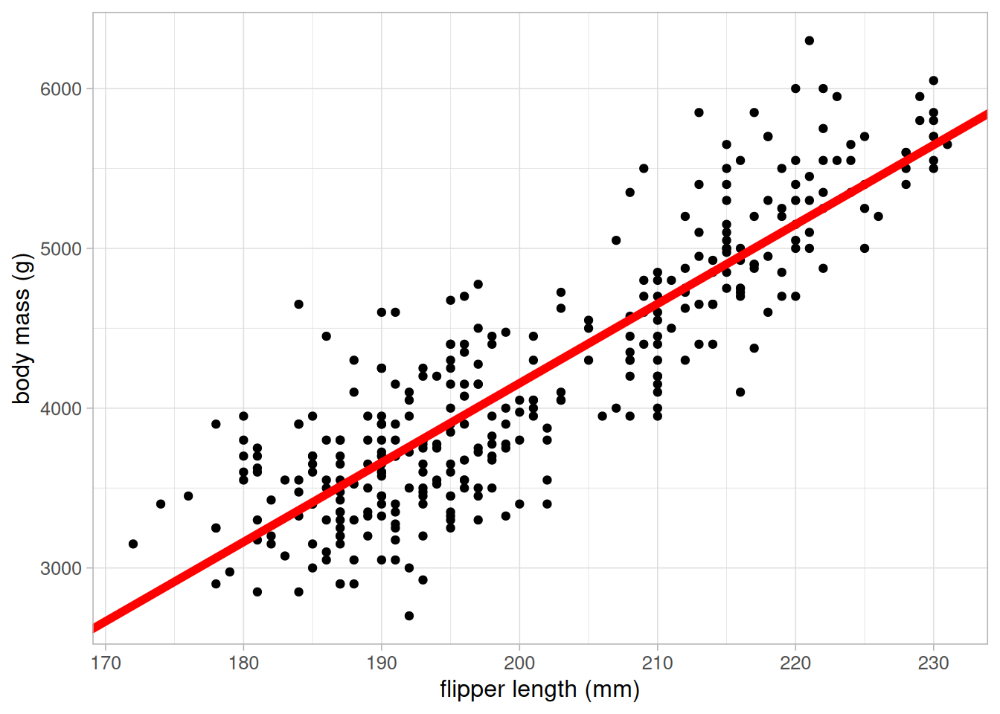
To obtain confidence intervals for the coefficient estimates, use the confint function:
confint(lm_flipper)- 1
-
By default, this returns the 95% confidence interval. This can be adjusted using the
levelargument. For example,level = 0.9would return the 90% confidence interval.
2.5 % 97.5 %
(Intercept) -6382.35801 -5179.30471
flipper_length_mm 46.69892 52.67221The 95% confidence interval for the flipper length coefficient it [46.7, 52.67]. Therefore we would expect the true effect of flipper length on body mass to be between 46.7 and 52.67 95% of the time under repeated sampling and modelling.
Note
We cannot make any causal statements about increases in flipper length causing increases in body mass as there may be underlying factors confounding these results.
3.3 Multiple linear regression
Multiple, or multivariable, linear regression is a powerful extension which allows models to take account of other observed variables. This is important as confounding variables can cause misleading results where they mask or even create spurious associations between variables.
Although the previous model appears to explain a large proportion of the variation in body mass, we want to ensure that this association is not influenced by other variables. For example, we may wish to account for differences in species which is likely to be associated with body mass:
ggplot(data = penguins) +
geom_point(aes(x = flipper_length_mm, y = body_mass_g,
colour = species)) +
scale_colour_brewer(palette = "Dark2") +
labs(x = "flipper length (mm)", y = "body mass (g)") +
theme_light(base_size = 12)
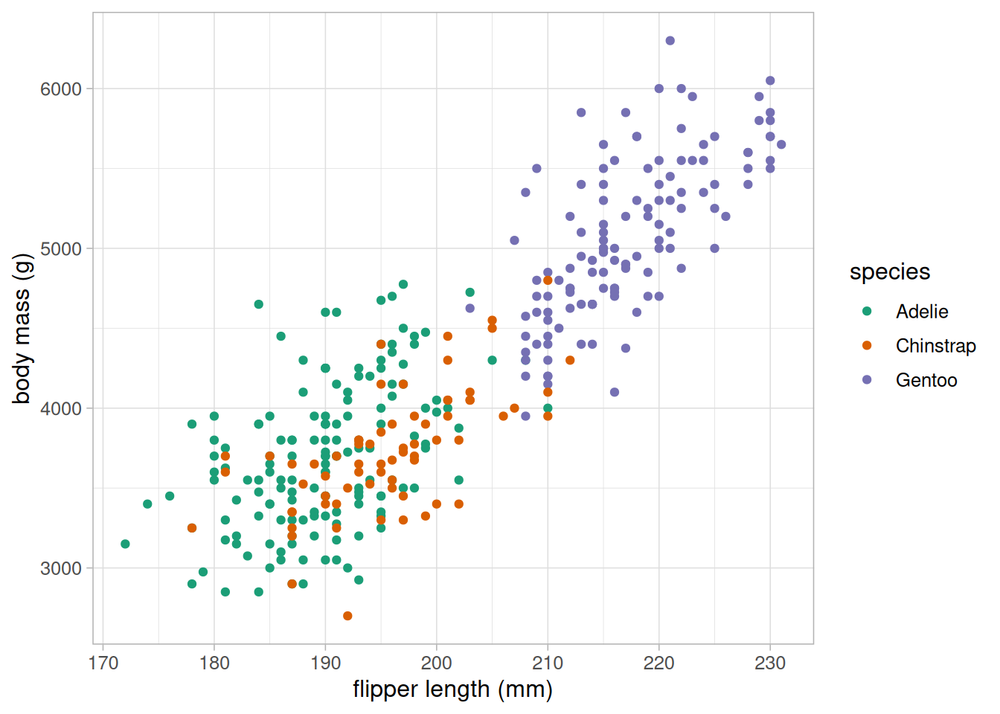
The scatterplot clearly shows that species is highly associated with both body mass and flipper length, making it a potential confounding variable, and therefore a variable we should consider including in our model. As species is a categorical variable, we must include it into the model as dummy variables.
3.3.1 Dummy variables
Dummy variables take the value 1 or 0, with 1 representing inclusion in a group. Categorical variables require one less dummy variable than the number of categories the variable represents to be included in a regression model. For example, binary variables require one dummy variable, the species variable requires two. The category which does not have an associated dummy variable is implicitly included in the model as the reference group.
For example, the species variable would be converted from a single nominal variable to two dummy variables:
| species | chinstrap | gentoo |
|---|---|---|
| Gentoo | 0 | 1 |
| Gentoo | 0 | 1 |
| Adelie | 0 | 0 |
| Adelie | 0 | 0 |
| Adelie | 0 | 0 |
| Gentoo | 0 | 1 |
| Adelie | 0 | 0 |
| Adelie | 0 | 0 |
| Adelie | 0 | 0 |
| Adelie | 0 | 0 |
R converts factor variables into dummy variables automatically when they are included in the model formula. It is important to check that variables are classified as factor before adding them to the model.
class(penguins$species)[1] "factor"levels(penguins$species)[1] "Adelie" "Chinstrap" "Gentoo" The class function returns the type of variable and levels lists the levels of factor variables in the order that they have been specified. R uses the first level of a factor variable as the reference group in a linear model. To change this order, we can use the fct_relevel function from tidyverse’s forcats package. For example, if we want to set the Gentoo species as the reference group, we would use the following:
penguins_new <- mutate(penguins,
species_gentoo = fct_relevel(species, "Gentoo"))
levels(penguins_new$species_gentoo)[1] "Gentoo" "Adelie" "Chinstrap"
Note
The choice of reference group depends on the data being analysed. If there is a clear reference, for example some control group that we would like to compare all others to, this should be set as the first level. If there is no clear choice of reference, sometimes people choose the largest group.
The factor is then added into the model formula within the lm function:
lm_flipper_spec <- lm(body_mass_g ~ flipper_length_mm + species,
data = penguins)
summary(lm_flipper_spec)
Call:
lm(formula = body_mass_g ~ flipper_length_mm + species, data = penguins)
Residuals:
Min 1Q Median 3Q Max
-927.70 -254.82 -23.92 241.16 1191.68
Coefficients:
Estimate Std. Error t value Pr(>|t|)
(Intercept) -4031.477 584.151 -6.901 2.55e-11 ***
flipper_length_mm 40.705 3.071 13.255 < 2e-16 ***
speciesChinstrap -206.510 57.731 -3.577 0.000398 ***
speciesGentoo 266.810 95.264 2.801 0.005392 **
---
Signif. codes: 0 '***' 0.001 '**' 0.01 '*' 0.05 '.' 0.1 ' ' 1
Residual standard error: 375.5 on 338 degrees of freedom
(2 observations deleted due to missingness)
Multiple R-squared: 0.7826, Adjusted R-squared: 0.7807
F-statistic: 405.7 on 3 and 338 DF, p-value: < 2.2e-16The output contains two additional coefficient estimates (one for each of the dummy variables). The updated linear equation estimated from this model is as follows:
\[ body mass = -4031.48 + 40.71 \times flipper length + -206.51 \times chinstrap + 266.81 \times gentoo \]
Notice that the coefficient estimate for flipper length has changed. This is because coefficient estimates in multiple regression models give the estimated change in the outcome per unit increase in the associated covariate after adjusting for everything else in the model. Therefore, body mass is expected to increase by 40.71 for every 1mm increase in flipper length after adjusting for species differences.
Coefficients associated with dummy variables give the average difference between that group and the reference group, assuming all other variables are equal. For example, Gentoo penguins with the same flipper length as an Adelie penguin were expected to weigh 266.81 more on average.
If we were to visualise this, dummy variables add parallel lines of best fit, one for each group:
ggplot(data = penguins) +
geom_point(aes(x = flipper_length_mm, y = body_mass_g, colour = species)) +
geom_abline(intercept = coefficients(lm_flipper_spec)[1],
slope = coefficients(lm_flipper_spec)[2],
colour = "#1B9E77", linewidth = 2) +
geom_abline(intercept = (coefficients(lm_flipper_spec)[1] +
coefficients(lm_flipper_spec)[3]),
slope = coefficients(lm_flipper_spec)[2],
colour = "#D95F02", linewidth = 2) +
geom_abline(intercept = (coefficients(lm_flipper_spec)[1] +
coefficients(lm_flipper_spec)[4]),
slope = coefficients(lm_flipper_spec)[2],
colour = "#7570B3", linewidth = 2) +
scale_colour_brewer(palette = "Dark2") +
labs(x = "flipper length (mm)", y = "body mass (g)") +
theme_light(base_size = 12)- 1
-
The equation of the line for Adelie penguins will be
body mass = -4031.48 + 40.71 \(\times\) flipper length + -206.51 \(\times\) 0 + 266.81 \(\times\) 0
= -4031.48 + 40.71 \(\times\) flipper length - 2
-
The equation of the line for Chinstrap penguins will be
body mass = -4031.48 + 40.71 \(\times\) flipper length + -206.51 \(\times\) 1 + 266.81 \(\times\) 0
= (-4031.48 + -206.51) + 40.71 \(\times\) flipper length - 3
-
The equation of the line for Gentoo penguins will be
body mass = -4031.48 + 40.71 \(\times\) flipper length + -206.51 \(\times\) 0 + 266.81 \(\times\) 1
= (-4031.48 + 266.81) + 40.71 \(\times\) flipper length
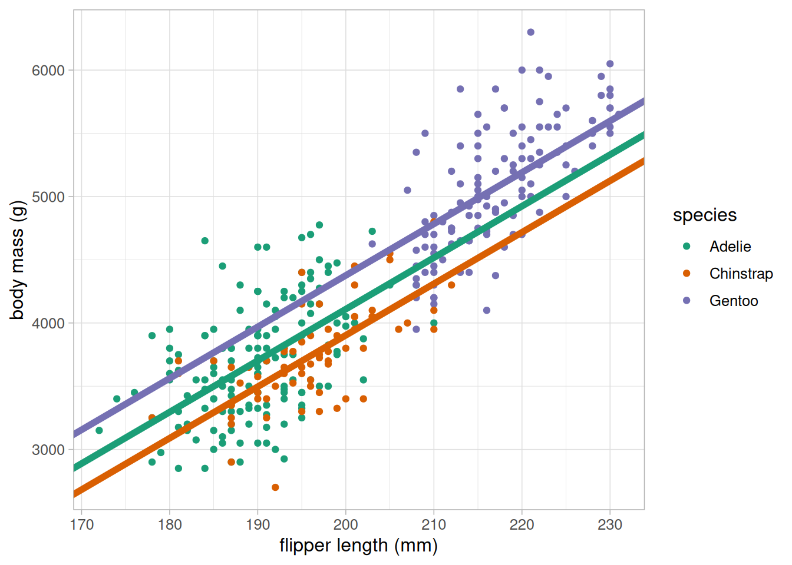
All three coefficients had very low p-values and are therefore significantly different from 0, or no association. We can obtain the confidence intervals for the coefficient estimates using confint:
confint(lm_flipper_spec) 2.5 % 97.5 %
(Intercept) -5180.50685 -2882.44693
flipper_length_mm 34.66468 46.74612
speciesChinstrap -320.06672 -92.95352
speciesGentoo 79.42513 454.19408Notice that none of these confidence intervals contain 0, supporting the p-values that we are not compatible with no association between these variables and body mass at the target population level.
Warning
When including categorical variables, we must include all associated dummy variables or none. This is the case even when some coefficients are considered significant and some are not.
3.4 Model comparisons
When choosing the best possible model to address a research question, the aim is usually to find the most parsimonious model for the job. That means the simplest model to explain as much as possible. Model choice should first and foremost be driven by the motivation for the analysis (the research question), our prior knowledge of what other factors are important, and common sense based on preliminary checks. Model choice should not be determined solely by p-values.
There are a number of tools available to help us select the most parsimonious model but these should be considered after motivation, prior knowledge and common sense.
3.4.1 Adjusted R-squared value
The Multiple R-squared value provided by the summary() function provides a measure of the proportion of the variation of the outcome explained by the model. As we add covariates to the model this value will increase, even by a tiny amount, regardless of whether the model addition is ‘worthwhile’. That is why the Adjusted R-squared value is also provided.
The Adjusted R-squared penalises the R-squared value based on the complexity of the model: the more complex a model is, the higher the penalty. Although the Multiple R-squared increases with every model addition, the Adjusted R-squared will only increase where the model is considered improved. Therefore, the adjusted value can be used to compare between models to identify the most parsimonious.
We can compare the two models fitted in this section using the Adjusted R-squared to identify the most parsimonious. The higher the Adjusted R-squared, the better the fit:
summary(lm_flipper)$adj.r.squared[1] 0.7582837summary(lm_flipper_spec)$adj.r.squared[1] 0.7807187The model including species had a higher Adjusted R-squared and is therefore considered the most parsimonious in this case.
Note
The Adjusted R-squared value should be used as a model comparison to identify the most parsimonious model. When the best possible model has been chosen, the results should be presented with the Multiple R-squared as a summary.
3.4.2 Information criterion
Another method to assess model goodness of fit is the deviance (also known as -2 log-likelihood). This is a measure of how much a model deviates from a hypothetical full model that predicts each point perfectly. This full model would not be useful to make inferences from as it would only describe the sample it is based on but the deviance can compare similar models to help find the most parsimonious.
The deviance alone is not useful as there is no value where a deviance is ‘small enough’ to represent a good fit. However, the deviance can be transformed into a score known as an information criterion. These provide a measure of how parsimonious models are by penalising their deviance based on the number of variables included. If the information criterion is lower after adding extra variables, this means the extra complexity explains enough to be worthy of inclusion.
There are a number of information criterions available with different penalties. Two of the most common are the Akaike information criterion (AIC) and the Bayesian information criterion (BIC). These scores will usually give similar results but may differ slightly as they attach different penalties (the BIC usually prefers simpler models to the AIC).
AIC(lm_flipper)[1] 5062.855AIC(lm_flipper_spec)[1] 5031.523BIC(lm_flipper)[1] 5074.359BIC(lm_flipper_spec)[1] 5050.697The model including species had the lowest value for both information criterion, indicating that the addition of species has improved the model enough to consider it worthwhile.
3.4.3 Prediction metrics
Root mean squared error (RMSE) and mean absolute error (MAE) are model comparison metrics that compare model predictions to the observed values. The smaller the RMSE or MAE, the better the model is at predicting the outcome. There are other similar metrics that can be used on place of these, however the RMSE and MAE are useful as they give the result on the same scale as the outcome.
As the name suggests, the RMSE is estimated by finding the root mean squared error (difference between the observed outcome, \(y_i\) and the predicted outcome from the model, \(\hat{y}_i\):
\[ \sqrt{\frac{1}{n}\sum{(y_i - \hat{y}_i)^2}} \]
The MAE returns the mean absolute error between the observed and predicted outcome:
\[ \frac{1}{n}\sum{|y_i - \hat{y}_i|} \]
Both these metrics can be estimated using the {Metrics} package in R, inputting the observed outcome (here, body_mass_g) and the predicted outcome from the model (obtained using the predict() function):
rmse(lm_flipper$model$body_mass_g, predict(lm_flipper))[1] 393.1236rmse(lm_flipper_spec$model$body_mass_g, predict(lm_flipper_spec))[1] 373.3325mae(lm_flipper$model$body_mass_g, predict(lm_flipper))[1] 313.0018mae(lm_flipper_spec$model$body_mass_g, predict(lm_flipper_spec))[1] 296.4359
Warning
We have extracted the observed outcome from the model object rather than the original data. This is because there is missing data in the penguins data which is removed when we fit the models. Using the original data will lead to variables of different length and produce an error in the functions.
Both metrics agree that the model containing species was better at predicting the body mass of penguins than the model just containing flipper length. Usually we would just choose one of these metrics rather than displaying both. In most cases, they will agree, where they don’t it is because the RMSE is more sensitive to outliers, unlike the MAE which treats all values equally.
3.5 Model diagnostics
Before communicating the results of a model, we must ensure that the model we have used is valid and appropriate for the data. Linear regression is a parametric method which means there are assumptions that must be checked to ensure that the model we are using is appropriate. Linear regression assumptions can be remembered using the LINE acronym:
- Linearity: the relationship between the (mean) outcome and explanatory variable(s) can be described using a linear equation
- Independence of errors: The residuals (errors) are independent
- Normally distributed errors: The residuals should be approximately normally distributed.
- Equivalent variance: The variance of the residuals is constant across all levels of the independent variables. (also known as homoskedasticity)
3.5.1 Linearity
One of the major assumptions underpinning linear models is that the mean outcome can be described as a linear equation of the covariates present in the model. Where there is only a single numeric variable or one numeric and one categorical variable, this assumption can be checked using a scatterplot. However, when models become more complex, we are no longer able to check this assumption graphically.
A better approach to checking the linearity assumption of regression models is to plot a scatterplot of model residuals against each covariate. If the assumption of linearity is valid, residual points should be randomly scattered around 0 without any obvious patterns. To produce these plots, we simply extract the residuals using resid and produce a scatterplot using ggplot and geom_point:
penguins_resid <- lm_flipper_spec$model %>%
mutate(
residuals_flipper_spec = resid(lm_flipper_spec),
fitted_flipper_spec = predict(lm_flipper_spec)
)
ggplot(data = penguins_resid) +
geom_point(aes(x = flipper_length_mm, y = residuals_flipper_spec)) +
labs(y = "residuals", x = "flipper length (mm)") +
geom_hline(yintercept = 0, colour = "red") +
theme_light(base_size = 12)- 3
- Adding a reference line where residuals = 0 can help check this assumption
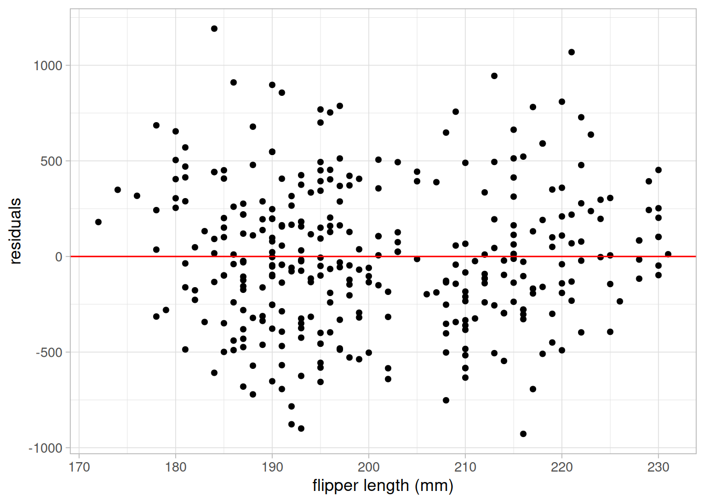
ggplot(data = penguins_resid) +
geom_point(aes(x = species, y = residuals_flipper_spec)) +
labs(y = "residuals", x = "species") +
geom_hline(yintercept = 0, colour = "red") +
theme_light(base_size = 12)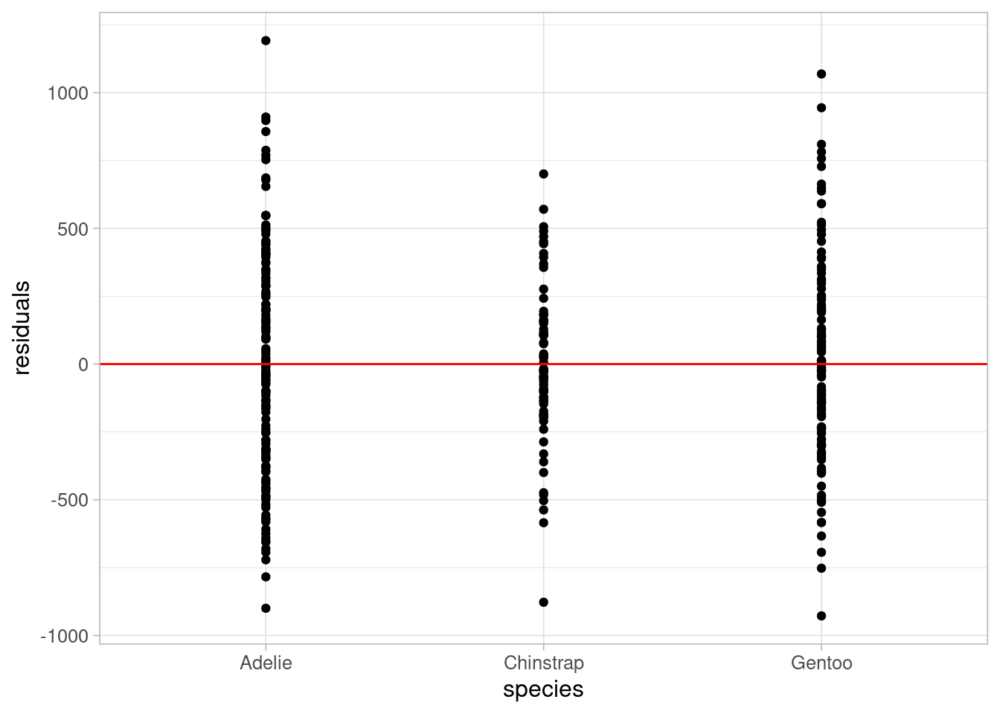
Both plots show residuals randomly scattered around the reference line of 0, with no patterns in the points. This indicates that the assumption of linearity is valid in this case.
Warning
Where the assumption of linearity is not appropriate, steps must be taken to resolve this or another method must be used.
One way to overcome lack of linearity is to transform the covariate that does not adhere to this assumption. For example, if the relationship between the outcome and a covariate is more curved than linear, a polynomial term (\(x^2\)) may be considered. Be cautious when applying transformations as this will change the interpretation of model coefficients (they will no longer be on the same scale as the original data).
If simple transformations will not overcome a lack of linearity, or where we need coefficients to be interpretable on the data scale, we could consider generalised additive models, an alternative statistical modelling approach that can be used to model nonlinear relationships.
3.5.2 Normally distributed residuals
Residuals are calculated by finding the difference between the observed outcome from the data and the predicted outcome using the model. Large residuals are an indication of poor model fit and can be used to improve a model. Residuals can be obtained from a model object in R using the resid function.
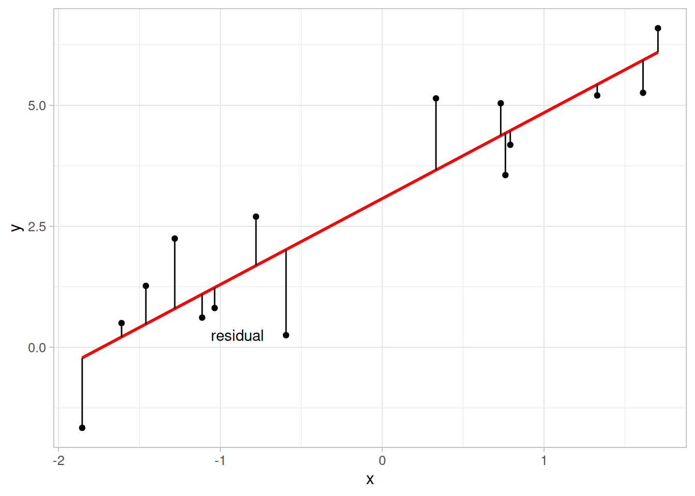
A common misconception about linear regression is that the outcome variable must be normally distributed. This is not the case, but the residuals must be. This can be easily checked using a histogram:
ggplot(data = penguins_resid) +
geom_histogram(aes(x = residuals_flipper_spec),
colour = "black", fill = "grey45") +
labs(x = "residuals") +
theme_light(base_size = 12)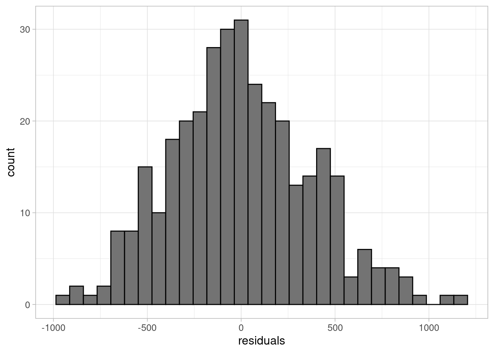
The histogram shows residuals follow an approximately normal distribution, centred around 0. Another method is to use the defaul QQ plots in the model diagnostic output.
3.5.3 Multicollinearity
Multicollinearity occurs when one or more of the explanatory variables can be explained by other covariates in the model. In other words, the explanatory variables are not independent of one another. When multicollinearity exists within a model, coefficient estimates become unstable and results may no longer be valid. The level of dependence between continuous covariates can be quantified using the variance inflation factor (VIF).
The VIF is estimated for each covariate, \(X_i\), by fitting a linear model where \(X_i\) is set as the outcome, with all other covariates included as explanatory variables. The VIF of this coefficient is estimated using the R-squared value of that model:
\[ VIF_i = \frac{1}{1 - R_i^2} \]
The larger the VIF, the more collinearity present in a model. For example, a VIF of 10 occurs when 90% of the covariate is explained by other variables in the model (where \(R^2\) = 0.9). There is no agreed level above which multicollinearity causes an issue in the model, although 5 is a common cut-off above which a VIF is considered high.
Note
Although correlation between covariates may give some indication of potential multicollinearity, regression is able to account for some amount of correlation. Although correlated covariates can be included, model interpretations may become more complex as the coefficients are estimated after adjusting for other variables in the model, often producing unexpected results.
Where a model contains categorical variables, the generalised VIF (GVIF) can be used. However, as some categorical variables are included into a model with multiple dummy variables, the GVIF must be adjusted to account for differences in the degrees of freedom (df). To make GVIF comparable across variables with different degrees of freedom, we apply the correction:
\[ GVIF^\frac{1}{2df} \]
This value is also known as the generalised standard error inflation factor (GSEIF). For numeric or binary covariates, this is the square root of the GVIF. Therefore, the rule of thumb cut-offs for problematic levels of multicollinearity when considering GSEIF will be the square root of the VIF cut-offs (\(\sqrt{5} = 2.236\)).
VIFs, GVIFs and (when the model contains categorical variables) GSEIFs are estimated in R using the {car} package:
library(car)
vif(lm_flipper_spec) GVIF Df GVIF^(1/(2*Df))
flipper_length_mm 4.509154 1 2.123477
species 4.509154 2 1.457215Both GSEIF values are below the cut-off value, indicating there is no issue with multicollinearity in this model.
Note
Where there is evidence of multicollinearity in a model, one or more of the covariates causing the issue must be removed from the model. Otherwise, coefficient estimates will be unstable and inferential results may be invalid.
3.5.4 Homoskedasticity
The final assumption to check when using linear regression is that the residuals have a constant variance across all observations. This can be checked using a scatterplot of the residuals against the predicted values. We would hope to see points scattered randomly around 0. If the variance is not constant, for example if we observe a funnel shape, we must rethink our model:
ggplot(data = penguins_resid) +
geom_point(aes(x = fitted_flipper_spec, y = residuals_flipper_spec)) +
geom_hline(yintercept = 0, colour = "red") +
labs(x = "fitted values", y = "residuals") +
theme_light(base_size = 12)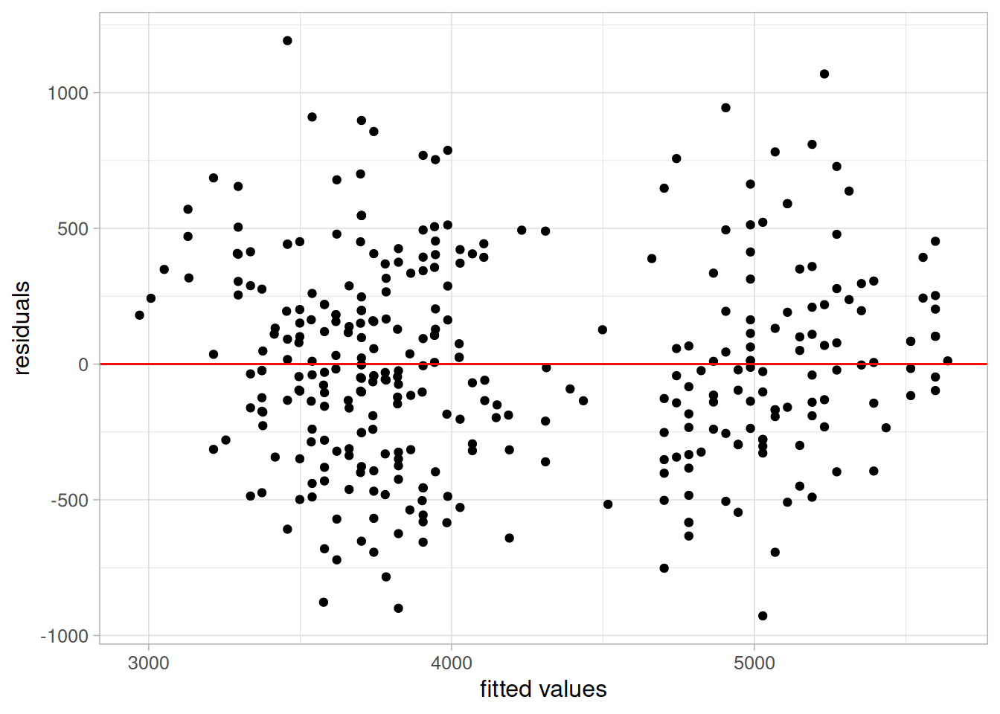
This plot shows evidence of heteroskedasticity: as body mass increases, the variance of the residuals also appears to increase. Therefore, this model could not be used without improvements.
3.5.5 Influential observations
Another consideration when fitting regression models is the existence (and impact) of influential observations. Observations may be influential if they are outliers or behave differently to other points, which can lead them pulling the model away from the majority of the sample. This can lead to models that are not representative of the majority of the data.
Note
As with other outliers, influential observations should not necessarily be removed from an analysis if they are part of the target population we would like to address. They may be part of an underrepresented part of the population that was not captured in the random sample.
One of the most common measures of influence is known as Cook’s distance. Cook’s distances provide a measure of how much the removal of each observation would change the model. The larger the Cook’s distance, the more the observation changes the model, making the point more influential.
There are no agreed guidelines giving a cut-off value above which an observation becomes ‘influential’ (although some have stated around 0.5). The best approach is best to plot Cook’s distances and identify extreme values by eye. The Cook’s distance can be plotted as follows:
plot(lm_flipper_spec, which = 4)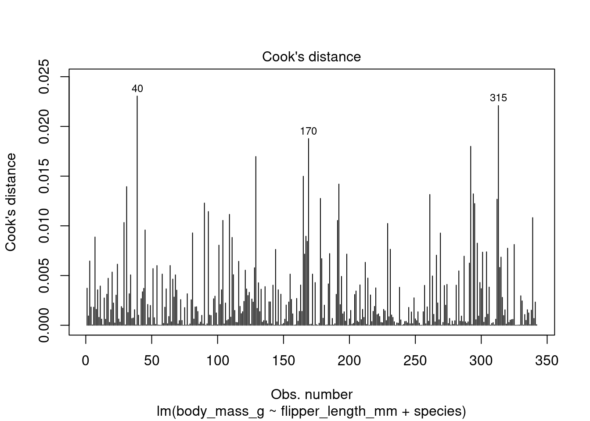
By default, R returns the row number of observations it considers ‘influential’ which can then be used to improve the model.
R uses an arbitrary method of identifying ‘influential’ observations. This means these observations are not necessarily problematic. In this case, all Cook’s distances are below 0.025, making their level of influence very low.
R recognised rows 40, 170 and 315 as potentially influential. In some cases, viewing these rows can give us ideas about variables that are not in the current model but explain the differences in these observations that may improve the model:
| species | island | bill_length_mm | bill_depth_mm | flipper_length_mm | body_mass_g | sex | year |
|---|---|---|---|---|---|---|---|
| Adelie | Dream | 36.5 | 18.0 | 182 | 3150 | female | 2007 |
| Gentoo | Biscoe | 46.2 | 14.5 | 209 | 4800 | female | 2007 |
| Chinstrap | Dream | 49.0 | 19.5 | 210 | 3950 | male | 2008 |
Hint
R contains a generic plot function that returns model diagnostic plots, including residual plots and Cook’s distance when applied to a linear model object.
par(mfrow = c(2, 2))
plot(lm_flipper_spec)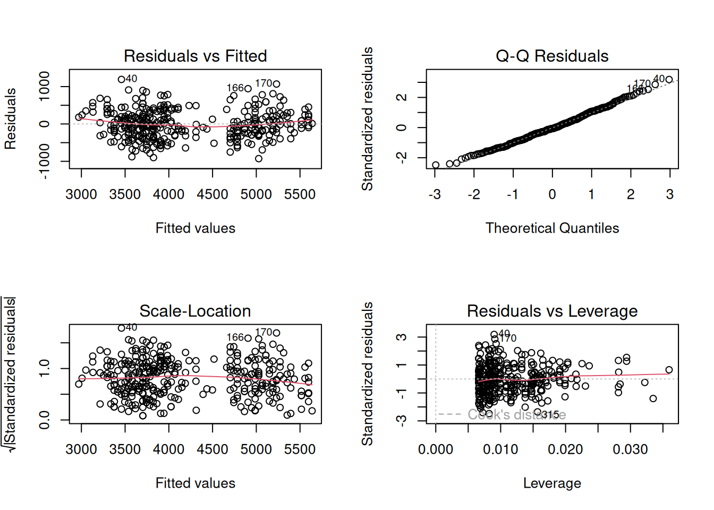
Exercise 2
Using everything you have learned up to this point, use linear regression to answer the research question posed earlier:
Is body mass of penguins in the Palmer Archipelago related to their flipper size?
Exercise hint
Explore the data to identify variables that are likely to be related to body mass that could be confounders. This includes visualising and summarising the sameple.
Add variables into the model, using model comparisons such as the adjusted R-squared, information criterions and RMSE/MAE to understand whether these improve the model.
When you have chosen what you consider to be the best possible model, check the linear regression assumptions are met and present your answer.
If you are REALLY stuck, an example solution can be found here.